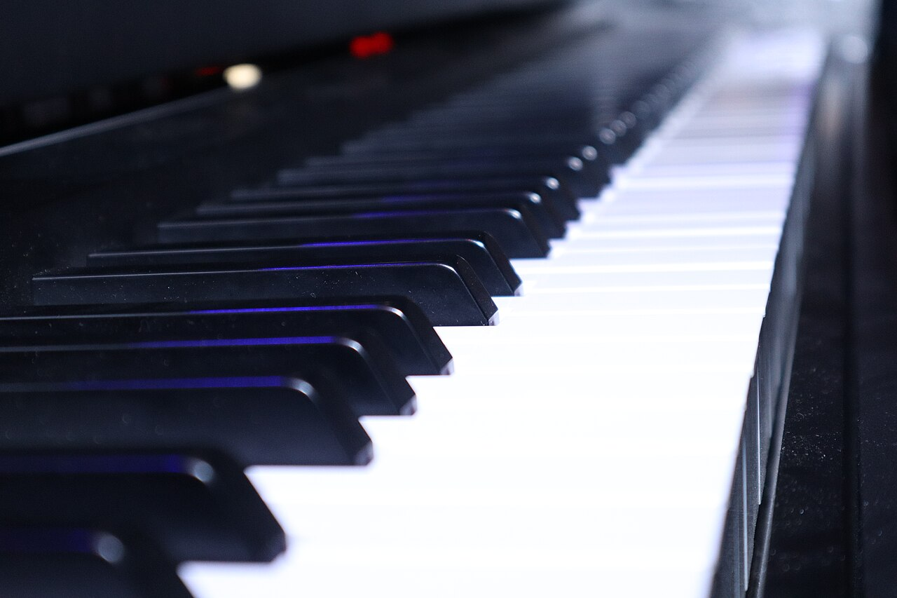

Музыка · 7-бөлім · Альтерация Music · Section 7 · Accidentals Музыка · Раздел 7 · Альтерация
Альтерация — негізгі нотаны жарты тонға көтеру немесе түсіру. Белгілер нотаның алдында тұрады. An accidental raises or lowers a basic note by a semitone. The sign is placed before the note. Альтерация — повышение или понижение основной ноты на полутон. Знаки ставятся перед нотой.
Диез Sharp Диез
нотаны жарты тонға көтереді (жоғары) raises the note by a semitone (up) повышает ноту на полутон (вверх)
Бемоль Flat Бемоль
нотаны жарты тонға түсіреді (төмен) lowers the note by a semitone (down) понижает ноту на полутон (вниз)
Бекар Natural Бекар
белгіні жояды, негізгі (таза) нотаны қайтарады cancels the sign, restores the natural note отменяет знак, возвращает натуральную ноту
💡 Қос белгілер де бар: дубль-диез (♯♯) — бүтін тонға (екі жарты тон) көтереді, дубль-бемоль (♭♭) — бүтін тонға түсіреді. 💡 There are double signs too: a double-sharp (♯♯) raises by a whole tone (two semitones), a double-flat (♭♭) lowers by a whole tone. 💡 Есть и двойные знаки: дубль-диез (♯♯) повышает на целый тон (два полутона), дубль-бемоль (♭♭) понижает на целый тон.
Жарты тон — екі дыбыс арасындағы ең кіші қашықтық: екі көрші перне (қара пернені қоса). Бүтін тон = екі жарты тон. A semitone is the smallest distance between two sounds: two neighbouring keys (including a black one). A whole tone = two semitones. Полутон — наименьшее расстояние между двумя звуками: две соседние клавиши (включая чёрную). Целый тон = два полутона.
🎧 нотаны басып, көршісін басыңыз — бұл жарты тон tap a note, then the next one — that is a semitone нажмите ноту, затем соседнюю — это полутон
📌 Қара пернелер — диездер мен бемольдер. Бір ғана қара перне до-диез те, ре-бемоль де болады: дыбысы бірдей, аты әртүрлі — бұл энгармонизм (до♯ = ре♭). 📌 The black keys are the sharps and flats. One black key is both C♯ and D♭: the same sound, different names — this is enharmonics (C♯ = D♭). 📌 Чёрные клавиши — это диезы и бемоли. Одна и та же чёрная клавиша — это и до-диез, и ре-бемоль: звучание одинаковое, названия разные — это энгармонизм (до♯ = ре♭).

Белгінің орналасуы оның қанша уақыт әрекет ететінін анықтайды: Where a sign stands decides how long it lasts: Где стоит знак — от этого зависит, сколько он действует:
| БелгіSignЗнак | Қайда тұрадыWhere it standsГде стоит | Қанша әрекет етедіHow long it lastsСколько действует |
|---|---|---|
| КездейсоқAccidentalСлучайный | нотаның алдындаbefore the noteперед нотой | бір такттың ішінде ғанаwithin one measure onlyтолько в пределах одного такта |
| КілттікKey signatureКлючевой | кілт жанындаat the clefпри ключе | бүкіл шығармадаthroughout the whole pieceво всей пьесе |
📌 Бекар (♮) кездейсоқ белгіні де, кілттік белгіні де жоя алады — нота қайтадан таза дыбысталады. 📌 A natural (♮) can cancel both an accidental and a key-signature sign — the note sounds natural again. 📌 Бекар (♮) может отменить и случайный, и ключевой знак — нота снова звучит натурально.